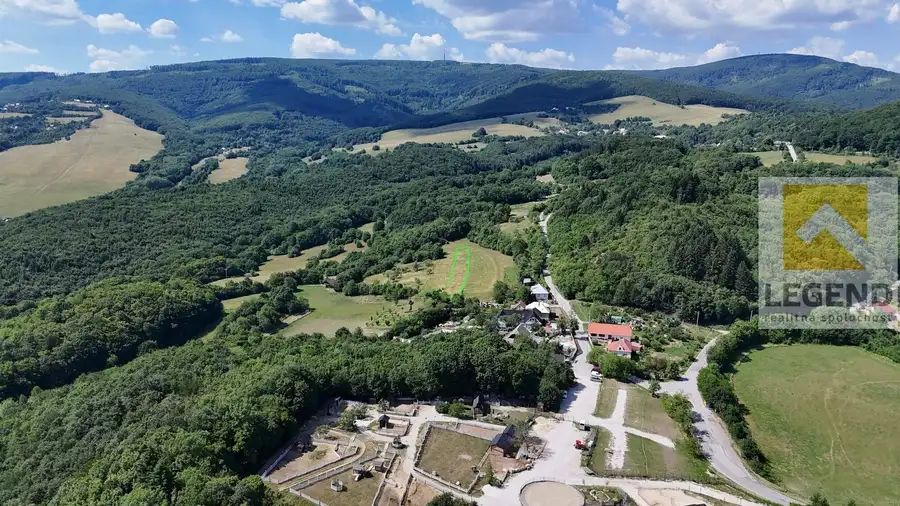
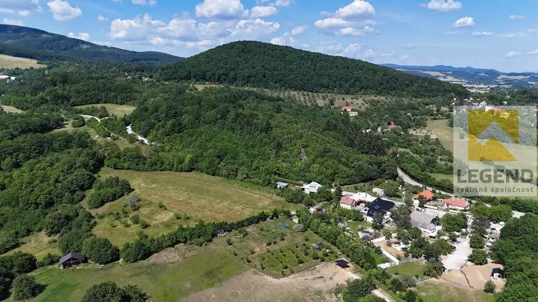
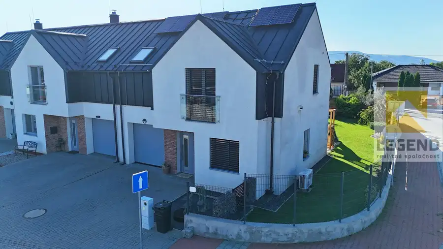

LEGEND - Krásný pozemok v Lubine - vedľa Minifarmy, 1.784 m2, IS dostupné
Lubina



- Plocha1784 m²
O nehnuteľnosti
*** Krásna lokalita vedľa Mini-farmy Lubina – Nádherné prostredie i výhľad - Výborná dostupnosť asfaltovou cestou do Nového Mesta nad Váhom **** Jedinečná príležitosť - Nádherný pozemok na predaj aký sa vyskytne len raz za dlhý čas ... *Na predaj krásny pozemok o výmere 1.784 m2 v Lubine – časť Škulcovci, vzdialený cca. 2 min chôdze od Mini farmy Lubina, 7 km na vrchol Veľkej Javoriny, 6 km od centra Starej Turej, 14 km od centra Nového Mesta nad Váhom a 16km od diaľničného privádzača. Z Bratislavy vzdialený cca. 110 km – 1h.10min.Pozemok sa nachádza v tichom a krásnom prostredí Lubinských kopaníc, s pekným výhľadom na široké okolie, mierne svahovitý, slnečný. V dosahu časti pozemku do 20 - 50m : elektrina, voda. Prístup po spevnenej štrkovej ceste napojenej priamo na hlavnú na asfaltovú cestu Veľká Javorina - NMnV. Hneď vedľa pozemku sa nachádza novopostavený rodinný dom.* Pre pozemok je odsúhlasené zahrnutie v plánovanej zmene UP pre výstavbu RD. *Rozmery zaručujú veľké možnosti realizácie – šírka v celej prvej ½ pozemku - v spodnej časti 16m. Šírka v druhej ½ pozemku - 15m ( stred) – 12m ( horná časť)Dĺžka 118m.Nehnuteľnosť má výborné zázemie – nachádza sa kúsok od rekreačného centra Mini- farma s vybudovanými službami v podobe kaviarne a obchodíku s miestnymi produktami. Ďalšie dve obľúbené reštaurácie sú dostupné len do pár minút – Hostinec u Klačkov do 2 min jazdy autom a Country salon Cetuna do 5 min jazdy autom. Kompletná občianska vybavenosť sa nachádza v obci Lubina a meste Stará Turá obe vzdialené len cca. 7 min jazdy autom.Nehnuteľnosť nájdete v predaji EXKLUZÍVNE iba u nás!Cena pozemku – 59.000,-€ .Cena pozemku je vrátane kompletného právneho servisu + kolkov na katastri.*** V prípade vážneho záujmu DOHODA MOŽNÁ.***KONTAKT: Pavlína Talianová Tel. 0917/633 285MAIL: talianova@legend.skTúto nehnuteľnosť predáva LEGEND realitná spoločnosť s.r.o., pobočka Nové Mesto nad Váhom, Námestie Slobody 9A (NATALI centrum) TEL. 0917/633285Chcete profesionálne predať svoj byt / dom / pozemok? Nestrácajte čas a kontaktujte nás!VOLAJTE NA ČÍSLO: 032/7434159
Parametre
- Druh
- Pozemok pre rodinné domy
- Dátum zverejnenia
- 02. 07. 2026
- Elektrina
- Pri pozemku - 230 V, Pri pozemku - 400 V
- Odpadové vody
- Nedostupné
- Plocha pozemku
- 1784 m²
- Plyn
- Nedostupné
- Pripravenosť k výstavbe
- Predbežný súhlas
- Terén pozemku
- Mierne svahovitý
- Typ
- Predaj
- Voda
- Nedostupné
Kde to je


Mohlo by Vás zaujímať
 Chalupa, rekreačný domčekNové
229 990 €LEGEND - !!! Znížená cena !!! - Jedinečná chalupa 8i+2 na kopaniciach vo Vrzavke - 14.202m2, hosp. budovy, 3x garáž, IS
Bzince pod Javorinou
550 m²
Chalupa, rekreačný domčekNové
229 990 €LEGEND - !!! Znížená cena !!! - Jedinečná chalupa 8i+2 na kopaniciach vo Vrzavke - 14.202m2, hosp. budovy, 3x garáž, IS
Bzince pod Javorinou
550 m²
 DomNové
79 990 €LEGEND - Gazdovský dom 4i + 1 v Lubine - blízko Minifarmy, 2x dieľňa, veľký pozemok 869m2
Lubina
300 m²
DomNové
79 990 €LEGEND - Gazdovský dom 4i + 1 v Lubine - blízko Minifarmy, 2x dieľňa, veľký pozemok 869m2
Lubina
300 m²

DomNové 279 990 €LEGEND - Smart Novostavba 4i+1 v Rakoľuboch - 351m2, garáž, zariadenie, energ. cert. A0 Kočovce 452 m²